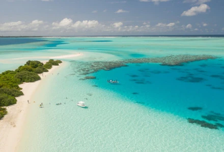

Seas
Definition
The sea is the interconnected system of all the Earth's oceanic waters, including the Atlantic, Pacific, Indian, Southern and Arctic Oceans. However, the word "sea" can also be used for many specific, much smaller bodies of seawater, such as the North Sea or the Red Sea. There is no sharp distinction between seas and oceans, though generally seas are smaller, and are often partly (as marginal seas or particularly as the Mediterranean sea) or wholly (as inland seas) enclosed by land.
However, an exception to this is the Sargasso Sea which has no coastline and lies within a circular current, the North Atlantic Gyre.: 90 Seas are generally larger than lakes and contain salt water, but the Sea of Galilee is a freshwater lake. The United Nations Convention on the Law of the Sea states that all of the ocean is "sea".
Humans and the sea
Humans have travelled the seas since they first built sea-going craft. Mesopotamians were using bitumen to caulk their reed boats and, a little later, masted sails. By c. 3000 BC, Austronesians on Taiwan had begun spreading into maritime Southeast Asia. Subsequently, the Austronesian "Lapita" peoples displayed great feats of navigation, reaching out from the Bismarck Archipelago to as far away as Fiji, Tonga, and Samoa. Their descendants continued to travel thousands of miles between tiny islands on outrigger canoes, and in the process they found many new islands, including Hawaii, Easter Island (Rapa Nui), and New Zealand.
The Ancient Egyptians and Phoenicians explored the Mediterranean and Red Sea with the Egyptian Hannu reaching the Arabian Peninsula and the African Coast around 2750 BC. In the first millennium BC, Phoenicians and Greeks established colonies throughout the Mediterranean and the Black Sea. Around 500 BC, the Carthaginian navigator Hanno left a detailed periplus of an Atlantic journey that reached at least Senegal and possibly Mount Cameroon.
Life in the sea
The oceans are home to a diverse collection of life forms that use it as a habitat. Since sunlight illuminates only the upper layers, the major part of the ocean exists in permanent darkness. As the different depth and temperature zones each provide habitat for a unique set of species, the marine environment as a whole encompasses an immense diversity of life. Marine habitats range from surface water to the deepest oceanic trenches, including coral reefs, kelp forests, seagrass meadows, tidepools, muddy, sandy and rocky seabeds, and the open pelagic zone.
The organisms living in the sea range from whales 30 metres (100 ft) long to microscopic phytoplankton and zooplankton, fungi, and bacteria. Marine life plays an important part in the carbon cycle as photosynthetic organisms convert dissolved carbon dioxide into organic carbon and it is economically important to humans for providing fish for use as food.